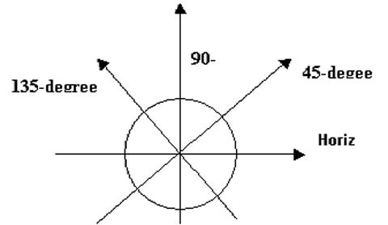
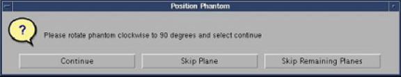
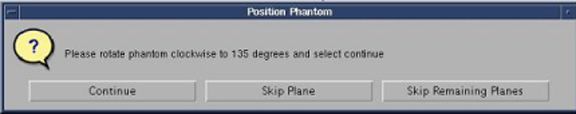

Proprietary to General Electric Company
Direction 5440000, Rev# 5
Signa HDxt Service Methods
Module Version 5.0, Version Date 10/21/10
Proprietary to General Electric Company |
| Required Persons | Preliminary Reqs | Procedure | Finalization |
|---|---|---|---|
| 1 | Not Applicable | Not Applicable |
| Item | Qty | Effectivity | Part# | Manufacturer | |
|---|---|---|---|---|---|
| Elliptical Phantom and Test Fixture | 1 | - | 5313739 | - | |
At the scanner, remove any surface or head coil from the bore.
Place the Elliptical Phantom and Test Fixture (PN 5313739) at the center (superior/inferior) of the cradle.
Set the angle of the phantom to 0 degrees.
Illustration 1: Phantom at Center of Cradle

| NOTE: | Allow the phantom solution to settle for 5 minutes prior to scanning. This will prevent flow-related artifacts, which may affect the test results. |
Landmark on the center of the phantom as shown. Press [Landmark] and [Advance to Scan] on the keypad on the front of the magnet enclosure.
Illustration 2: Elliptical Phantom Positioning

Install the USB service key.
| ||||
| A localizer Body scan must be run prior to the automatic Uniformity tool. | ||||
At the Operator Console, select New Pt and prescribe the following scan:
| ID: | geservice |
| Name: | Localizer |
| Weight (Lb): | 150 |
| Patient Position: | Supine |
| Patient Entry: | Head First |
| Coil: | Body |
| Plane: | 3-Plane |
| Mode: | 2D |
| Pulse Seq: | Gradient Echo |
| Grad Mode: | Whole |
| Imaging Options: | Seq, Fast |
| FOV: | 40 cm |
| Slice Thickness: | 3.0 mm |
| Spacing: | 0 |
| Scanning Range: | S/I = 0, R/L = 0, A/P = 0 |
| # of Slices: | 1 |
| Freq Matrix: | 256 |
| Phase Matrix: | 128 |
| NEX: | 2.0 |
| Phase FOV: | 1.0 |
| Freq Dir: | Unswap |
| Autoshim: | Auto |
Select the [Scan] option and allow the scan to complete.
| ||||
| Do NOT re-Landmark between scans. | ||||
In a command window, type the following:
cd /usr/g/service/mclass/uniformity
touch .uniformity_enable
run_uniformity_tool
The Uniformity Tool screen (shown below) displays with the scan status and results.
| NOTE: | All buttons are inhibited during a scan. Only the [Abort Scan] button is available during a scan, but inhibited when Scan is idle. |
Illustration 3: Uniformity Tool Screen and Status

Select Four Scans mode from the Data acquisition mode drop-down menu.
Click [Scan and Analysis].
Click [Yes] when asked, Have you landmarked?
Illustration 4: Landmark Confirmation
Rotate the phantom to horizontal as instructed, wait 5 minutes for it to settle, then select [Continue] to start the scan.
Illustration 5: Horizontal Position Confirmation

During the scan, record the RF Amplifier Peak Forward (FW) Power value from the LCD display on the front of the RF Amplifier (shown below) into Table 1.
Illustration 6: RF Amplifier LCD Display

After the first scan completes, confirm that the dialog (shown in Illustration 5) displays requesting the user to reposition the phantom.
| NOTE: | The illustration below shows the various phantom positions
as viewed from the table end. Illustration 7: Phantom Positions  |
When asked to position the phantom, rotate it counterclockwise to the 45-degree plane, and wait 5 minutes for the phantom to settle. Select [Continue] to start the scan.
Illustration 8: 45-Degree Position

During the scan, record the RF Amplifier Peak Forward (FW) Power value.
After the second scan completes, confirm that the dialog displays requesting the user to reposition the phantom.
When asked to position the phantom, rotate phantom counterclockwise to a 90-degree plane, and wait 5 minutes for the phantom to settle. Select [Continue] to start the scan.
Illustration 9: 90-Degree Position

During the scan, record the RF Amplifier Peak Forward (FW) Power value.
After the third scan completes, confirm that the dialog displays requesting the user to reposition the phantom.
When asked to position the phantom, rotate it counterclockwise to a 135-degree plane, and wait 5 minutes for the phantom to settle. Select [Continue] to start the scan.
Illustration 10: 135-Degree Position

During the scan, record the RF Amplifier Peak Forward (FW) Power value.
Scanner should stop after scanning in the 135-degree position, and automatically process and display results as shown below.
Illustration 11: Plot for Scan Results

Record the TG and Uniformity (U) displayed values in the table below.
Table 1: Uniformity Phantom Data Table
| Elliptical Phantom Position | Exam/Series/Image | TG | Power | Uniformity |
| FW | U | |||
| 0 | ||||
| 45 | ||||
| 90 | ||||
| 135 |
| NOTE: | Be aware of the following:
|
The screen (shown in Illustration 11) indicates if the Uniformity test passed or failed. If failed, proceed to Section 4.5 of the 3.0T Twin RF Body Coil Replacement to align the coil.
No finalization steps.